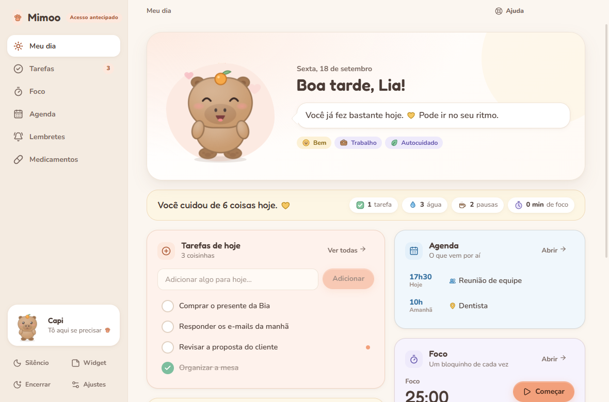
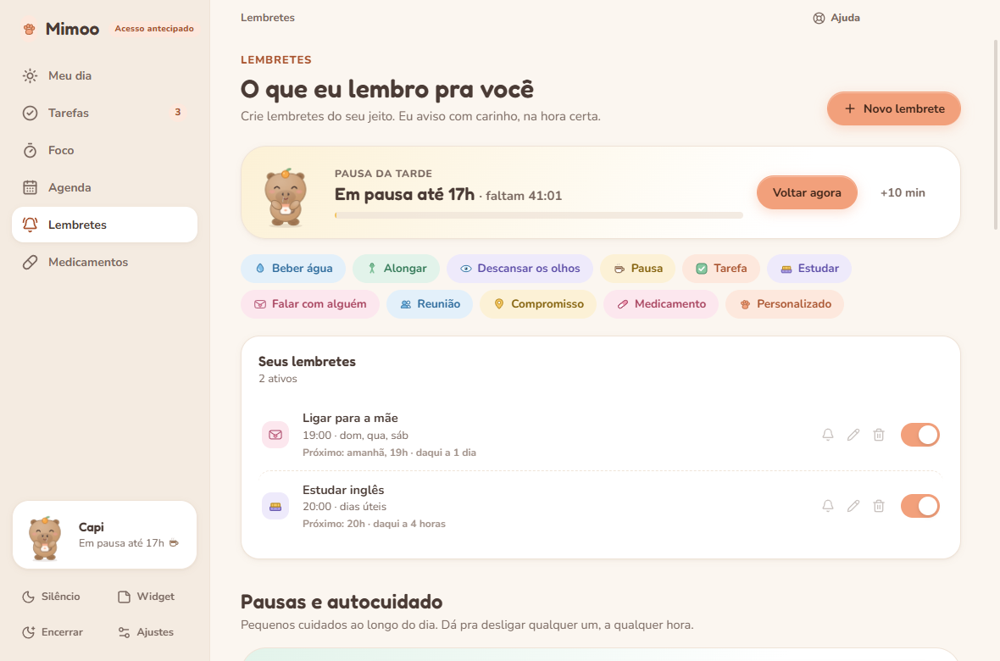

Lembretes do seu jeito
Água, remédio, aquela tarefa. Uma vez, em horários fixos ou a cada tantos minutos, só nos dias e horários que fazem sentido pra você.
Acesso antecipado para Windows
Lembretes gentis, pausas de verdade e foco sem culpa, com um bichinho que te acompanha pertinho na tela.
Windows 10 e 11
Como funciona
O Mimoo lembra, organiza e ajuda você a focar, pausar e se cuidar. Tudo no seu ritmo.
Água, remédio, aquela tarefa. Uma vez, em horários fixos ou a cada tantos minutos, só nos dias e horários que fazem sentido pra você.
Pausas curtas ao longo do dia e pausas marcadas, como o almoço ou a das 16h. Ele avisa quando começa e toca um som quando termina.
Pomodoro com o seu tempo: 25+5, 50+10 ou o que funcionar melhor. O bichinho estuda junto e segura os lembretes leves até a pausa.
Um widget na área de trabalho com suas tarefas, o foco e o bichinho. Arraste, minimize ou esconda quando quiser.
Um check-in rápido de manhã: como você está e o que importa hoje. Em dia cansado, os lembretes ficam mais leves e dá pra escolher só o essencial.
No fim do dia, um resumo gentil do que você cuidou. O que ficou pra depois vai pra amanhã, sem sermão.
Meu dia
Suas prioridades, os próximos lembretes, a agenda, o foco e os pequenos cuidados. Com um resumo que conta o que você fez, e não o que faltou.

Pausas marcadas
Trabalha de casa e tem pausa das 16h às 17h? Marque uma vez. O Mimoo avisa quando começa, mostra quanto falta, segura os lembretes leves e toca um som quando é hora de voltar.
Precisa de mais uns minutinhos? Um toque e a pausa estica.

Bichinhos
Cada um com seu jeitinho. E eles mudam de pose com o seu dia: estudam, tomam café, comemoram, cochilam.
Em breve mais amigos chegando
Privacidade
Suas tarefas, lembretes e anotações existem para te ajudar, e só. O Mimoo não mostra anúncios, não vende dados e não acompanha o que você faz.
Ler a política de privacidadeRequisitos
O Mimoo foi feito para ficar aberto o dia todo sem pesar no computador.
Dúvidas
Os caminhos para as coisas mais usadas no Mimoo.
Baixe o instalador, abra o arquivo e siga os passos. Se aparecer a tela “O Windows protegeu o computador”, clique em “Mais informações” e depois em “Executar assim mesmo”.
É a primeira versão do Mimoo, aberta antes do lançamento completo. Algumas funcionalidades ainda são limitadas, e as novidades vão chegando até a versão final.
Não. Ele continua pertinho do relógio, na bandeja do Windows, para os lembretes chegarem. Clique no ícone dele para abrir de novo. Para sair de vez, clique com o botão direito no ícone e escolha “Sair do Mimoo”.
Ajustes → Widget e sistema → ligue “Iniciar com o Windows”. Se preferir que ele comece quietinho, sem abrir a janela, ligue também “Começar minimizado”.
Vá em Lembretes → “Novo lembrete”, ou comece por um dos modelos prontos (Beber água, Alongar, Estudar…). Escolha se ele avisa uma vez, em horários fixos ou a cada tantos minutos, e em quais dias.
Lembretes → Pausas marcadas → “Adicionar”. Dê um nome e escolha o começo, o fim e os dias. O Mimoo avisa quando a pausa começa e toca um som quando é hora de voltar.
Lembretes → Pausas e autocuidado. Desligue a chave no cartão do cuidado, ou use o − e o + para ele lembrar com menos (ou mais) frequência.
Clique em “Silêncio”, na barra lateral, e escolha 30 minutos, 1 hora, 2 horas ou até amanhã. Os lembretes leves de autocuidado ficam de fora, e os outros esperam você voltar.
Dá. No próprio aviso, clique em “Adiar” e escolha por quanto tempo.
Confira se o “Silêncio” está desligado e se o lembrete está ligado em Lembretes. Se você escolheu o estilo “Notificação do Windows”, o modo Não Perturbe do Windows pode esconder os avisos: em Ajustes → Notificações, o cartãozinho no canto sempre aparece.
Medicamentos → “Adicionar”: nome, dose, horários e dias. Quando o aviso chegar, é só marcar que tomou.
Vá em Foco, escolha um tempo (25+5, 50+10 ou o seu) e clique em “Começar foco”. O Mimoo avisa quando é hora da pausa e segura os lembretes leves até lá.
Em Meu dia, escreva em “Adicionar algo pra hoje…”. Em Tarefas → “Nova tarefa” dá para colocar prioridade, prazo, lembrete e subtarefas.
Agenda → “Conectar calendário” → “Conectar com Google”, e entre com a sua conta. Seus compromissos aparecem na Agenda e no Meu dia. Para Outlook ou Apple, use Ajustes → Calendários → Calendário por link.
Ajustes → Mascote. Ali também dá para mudar o nome dele e como ele fala com você.
Clique em “Widget”, na barra lateral. Em Ajustes → Widget e sistema você escolhe entre o post-it com suas tarefas ou só o mascote, e se ele fica sempre por cima das janelas.
Tem. Ajustes → Aparência → Tema: Claro, Escuro ou Igual ao sistema. Ali também dá para escolher a cor de destaque.
No Mimoo, clique em “Ajuda”, no alto da janela, e depois em “Falar com a gente”. Dá para contar um problema, mandar uma sugestão ou tirar uma dúvida, com print se quiser.
Instala em um minutinho. Você escolhe o bichinho e ele já começa a te acompanhar.
Baixar para WindowsVersão 0.8.3 · acesso antecipado · Windows 10 e 11 (64 bits)